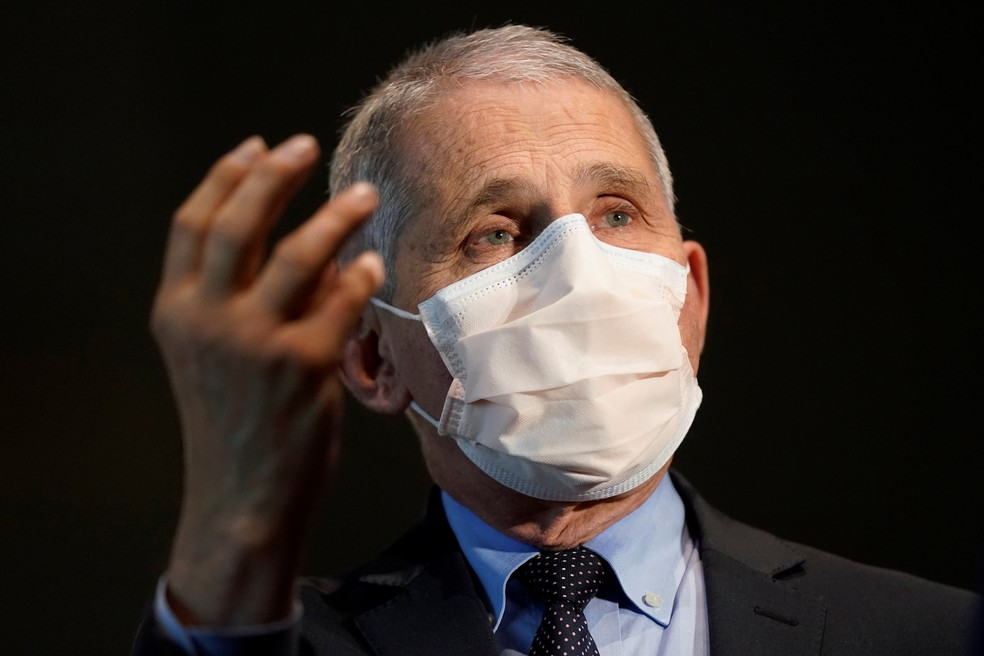

Covid-19: após mudança na data de entrega,
Brasil recebe 1 milhão de doses da vacina da Pfize
Por Jorge Gabriel
Atualizado em 25/07/2021
Voo com o imunizante estava previsto para sexta-feira, mas farmacêutica mudou a logística de entrega e lote desembarcou no Aeroporto Internacional de Viracopos, em Campinas, na manhã desta segunda.
Religioso que zombava de vacinas nas redes morre por covid-19 nos EUA
Stephen Harmon, que se opunha à vacinação, morreu após uma luta de um mês contra o vírus.
Especialista da Casa Branca fala em 'direção errada' dos EUA na pandemia e diz considerar volta do uso de máscara por vacinados
Anthony Fauci atribuiu aumento de casos de Covid entre americanos a não vacinados e à variante delta. Regiões do país onde casos cresceram voltaram a cobrar uso de máscara.
Notícias retiradas do site G1. (Usos dos dados apenas para meios acadêmicos)